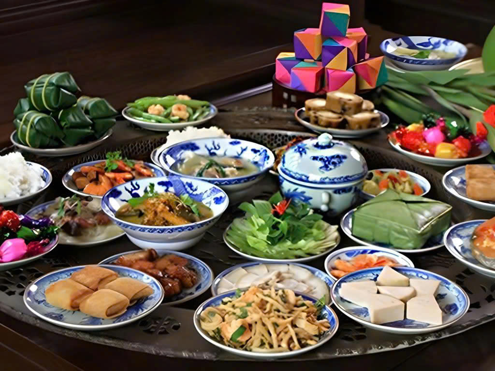
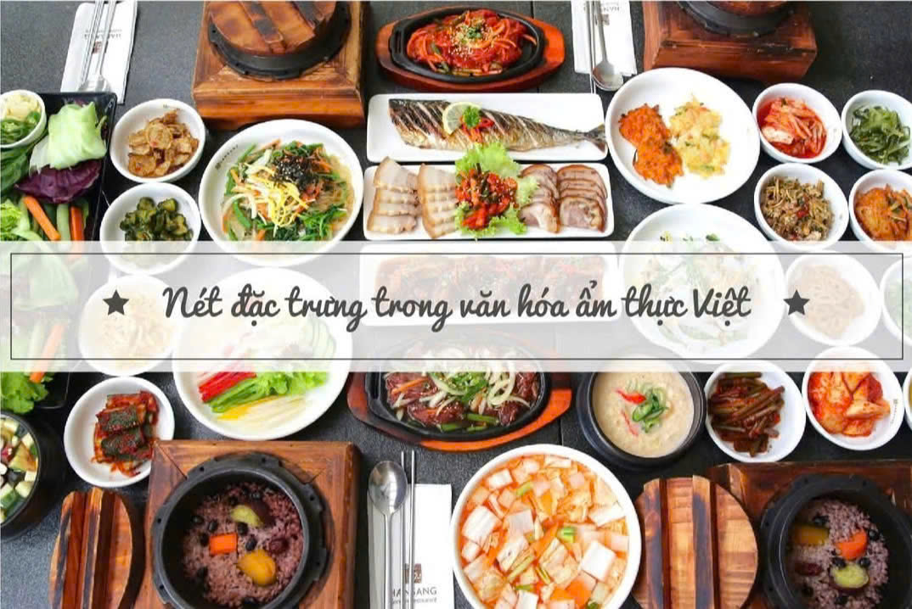
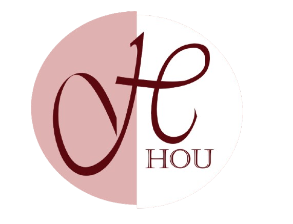
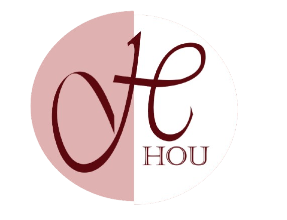

Ẩm thực Việt Nam – Tinh hoa văn hoá từ ba miền đất nước
Ẩm thực Việt Nam không chỉ đơn giản là một món ăn mà chúng còn là sự hòa quyện tuyệt vời giữa hương vị và nét đặc trưng văn hoá của mỗi vùng miền. Mỗi món ăn ngoài việc mang lại trải nghiệm ẩm thực thú vị chúng còn chứa đựng những câu chuyện về quê hương, gia đình và truyền thống trong đó.
Đặc điểm của ẩm thực Việt Nam
Việt Nam là một nước nông nghiệp thuộc đới khí hậu nhiệt đới, vùng nhiệt đới gió mùa. Ngoài ra, lãnh thổ nước Việt Nam chia làm 3 miền rõ rệt là Bắc, Trung và Nam nên đặc điểm mỗi vùng cũng có phần khác nhau. Chính điều này đã làm nên sự đa dạng trong văn hoá ẩm thực Việt Nam. Dưới đây là một số đặc điểm chung nổi bật của ẩm thực mảnh đất hình chữ “S” này.
- Việt Nam thuộc nền văn minh lúa nước nên ẩm thực chủ yếu sử dụng lúa gạo, khác với các nước dùng lúa mì hay ngũ cốc khác.
- Ẩm thực Việt sử dụng nhiều loại rau, chế biến đa dạng như luộc, xào, ăn sống, muối dưa; các món canh, đặc biệt là canh chua, rất phổ biến.
- Các loại thịt và hải sản như lợn, bò, gà, cá, tôm, cua… được dùng thường xuyên; ít sử dụng thịt dê, trâu hay các loại thịt đặc biệt trong bữa ăn hằng ngày.
- Một bộ phận người Việt theo đạo Phật hoặc nhu cầu riêng lựa chọn các món ăn chay, chủ yếu từ thực vật.
- Ẩm thực Việt chú trọng hương vị hơn hình thức hay sự cầu kỳ; ngày nay ngày càng phong phú và giàu dinh dưỡng hơn.

Đặc điểm nổi bật của ẩm thực Việt khiến nhiều thực khách ấn tượng
Nét đặc trưng của ẩm thực Việt Nam
Ẩm thực Việt Nam mang 9 đặc trưng nổi bật sau đây, chính những điểm này đã tạo nên sự khác biệt và ấn tượng trong văn hoá ẩm thực nước ta với bạn bè trên thế giới.

09 đặc trưng trong văn hoá ẩm thực Việt
- Tính đa dạng: Ẩm thực Việt phong phú, tiếp thu tinh hoa nhiều nơi và biến tấu theo đặc trưng của ba miền.
- Tính ít mỡ: ón ăn chủ yếu dùng rau, củ, quả và cách chế biến lành mạnh, tốt cho sức khỏe.
- Tính đậm đà hương vị: Sử dụng nhiều gia vị, đặc biệt là nước mắm, cùng các loại nước chấm phù hợp.
- Hòa quyện nhiều chất, nhiều vị: Kết hợp đa dạng nguyên liệu và các vị cay, mặn, ngọt, chua, béo.
- Tính ngon và lành: Nguyên liệu tươi sạch, chú trọng cân bằng dinh dưỡng trong bữa ăn.
- Dùng đũa khi thưởng thức: Đũa là dụng cụ ăn uống truyền thống, biểu tượng văn hóa Việt.
- Tính cộng đồng: Bữa cơm gia đình mang tính quây quần, chia sẻ và gắn kết.
- Tính hiếu khách: Thói quen mời cơm thể hiện sự lịch sự và lòng hiếu khách.
- Tính dọn thành mâm: Các món được bày chung một mâm, tạo không khí ấm cúng.
Đặc điểm văn hóa ẩm thực Việt Nam theo vùng miền
Văn hoá ẩm thực Việt Nam luôn có sự đa dạng, phong phú được chia theo ba miền Bắc, Trung, Nam với những đặc trưng riêng về hương vị, nguyên liệu cũng như cách chế biến.
 
